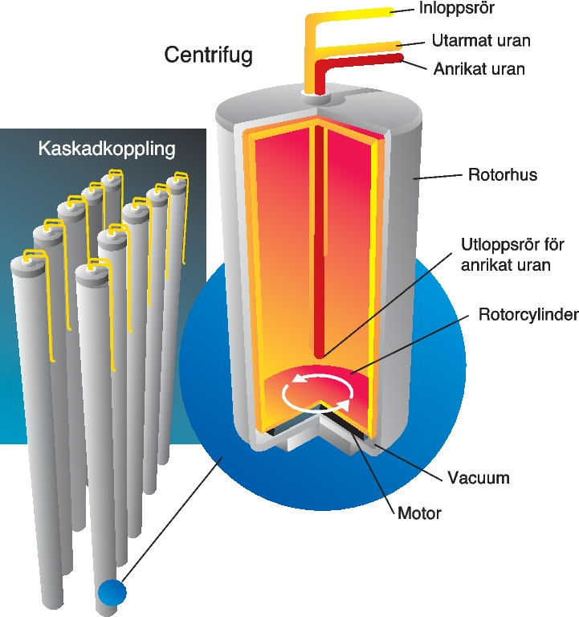

Uran
Uran används som bränsle i kärnkraftverk och har därför kommit att bli en av våra mest omdiskuterade råvaror. Var finns det uran i Sverige? Vad gäller för prospektering och brytning? Här får du svar på dessa och andra frågor om uran.
Uran är ett svagt radioaktivt, metalliskt grundämne, som förekommer naturligt i berg, jord och vatten. Hur hög uranhalten är i markens översta skikt framgår av kartan över flygmätt gammastrålning från uran, som kan ses i Kartvisaren Gammastrålning, uran.
Uran är ett av de vanligaste mineralerna och är svagt radioaktivt - ungefär på samma nivå som för en av våra vanligaste bergarter, granit. Uranet är det tyngsta – i fråga om atomvikten av de naturligt förekommande grundämnena och har atomnummer 92 i det periodiska systemet. Uranmetallen har en högre densitet – 19,1 g/cm3 – än bly men något lägre än guld.
Det finns tre isotoper av naturligt uran och alla är svagt radioaktiva med halveringstider på miljontals år. Sammansättningen och halveringstiderna visas i Figur 1. Av de tre isotoperna har U-235 den speciella egenskapen att den kan klyvas av fria neutroner, varvid stora mängder energi frigörs. Det är den processen som används för att producera energi i kärnkraftverk.
Naturligt uran kan inte användas direkt som bränsle i en kärnkrafts reaktor eftersom halten av den klyvbara isotopen U-235 är för låg för att hålla klyvningsprocessen igång. Därför an rikas naturligt uran så att halten av U-235 ökar till cirka 3 procent i det kärnbränsle som används i de flesta reaktorer.
